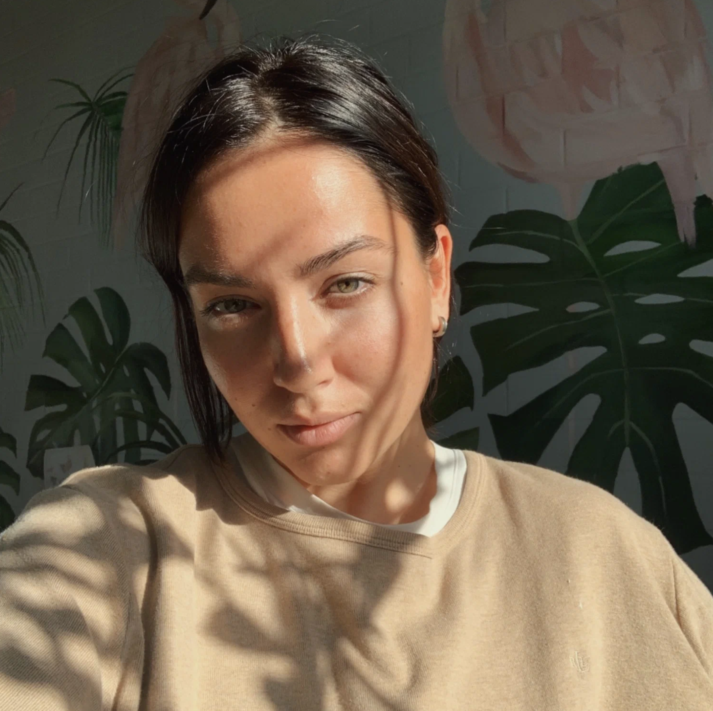

Привет! Меня зовут Ксения Вострякова, и я — современная художница, работаю маслом на холсте.
Меня интересует то, что трудно удержать: свет за секунду до того, как он исчезнет, тень, которая помнит форму дерева дольше, чем само дерево. Встреча и пауза перед расставанием, тишина внутри семьи, изменчивость сада от одного лета к другому.
Работаю с темами обыденной красоты, памяти и хрупкости человеческих связей — вместе они складываются в долгосрочный проект «Наша жизнь».
